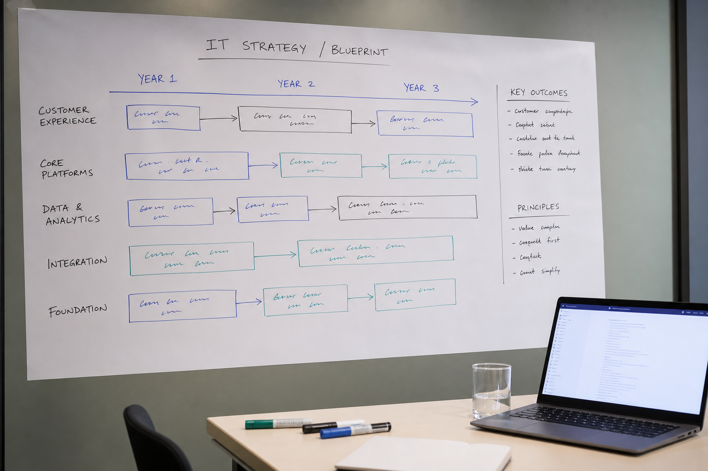

IT Management
We fine-tune your IT operations, ensuring they run at optimal efficiency.
Find out moreReady to transform your business through strategic IT? Start your transformation today with us.
We fine-tune your IT operations, ensuring they run at optimal efficiency.
Find out moreOur approach closes the divide between development and operations, ensuring swift, seamless deployments.
Find out moreWe lift your infrastructure into the cloud, providing solutions that are not only secure but also scalable.
Find out moreWe’re focused on fine-tuning your IT expenditure, guaranteeing you see a substantial return on your investments.
Find out more
Together, we’ll develop a visionary strategy that’s in perfect harmony with your business goals.
Find out moreWe bring our comprehensive expertise directly to you, acting as an integral extension of your team.
Find out moreIT Management
Transform complexity into clarity and efficiency.
In an age where IT underpins every facet of business, the complexity and demand on IT has never been higher. Navigating this ever-evolving landscape requires more than just oversight; it demands strategic foresight and expert management.
At The Technology Framework, we redefine IT management by turning complex challenges into streamlined efficient and practical solutions.
Our approach isn’t just about keeping the lights on; it’s about illuminating the path to innovation and growth.
We provide a comprehensive suite of IT management services designed to:
Strategic IT Management tailored to your business needs. Our IT Management services are crafted to provide a holistic solution to your IT challenges.
We delve into the heart of your IT estate, applying best practices and innovative strategies to:
Empower your business with Strategic IT Management.
Dev-Ops
Transform complexity into clarity and efficiency.
In the fast-paced digital realm, the division between development (Dev) and IT operations (Ops) can stifle progress and innovation.
A unified Dev-Ops approach is essential for swift, dependable delivery cycles that align teams, processes, and technologies.
Our Outsourced Dev-Ops service is the linchpin for a cohesive, high-functioning workflow that revolutionises project delivery.
By synchronising development and operations, we not only enhance efficiency but also foster an environment where innovation thrives.
With our expert guidance, you’ll experience:
In crafting our Dev-Ops strategies, we prioritise alignment with your unique business context, ensuring that every solution not only fits but enhances your existing processes.
Our approach transforms your operations to support agile, high-quality output, characterised by:
Discover how our bespoke Dev-Ops solutions can streamline your development and operations.
Cloud Migrations
Seamless transition to the cloud, tailored for your business.
Transitioning to the cloud presents a myriad of opportunities for scalability, flexibility, and innovation.
However, without a strategic approach, it can be fraught with complexity. Our Cloud Migration service demystifies this journey, ensuring a smooth, secure transition that aligns with your business objectives.
Embarking on a cloud migration journey marks a crucial step for any business. It demands a deep understanding of both the technology and your unique operational landscape.
We go beyond mere system migration; we ensure a strategic, seamless transition to the cloud. This process starts with a comprehensive evaluation of your current setup and goals, allowing us to devise a migration plan that’s not just secure and robust but also attuned to your business’s future growth and efficiency needs.
With The Technology Framework, you’ll benefit from:
Our Cloud Migration services extend beyond mere transition; we aim to transform your infrastructure into a dynamic, agile asset.
We achieve this through:
Did you know Cloud Migrations can reduce IT costs by up to 40%, enhancing business efficiency?
Let's craft a Cloud Migration strategy that propels your business into the future.
IT Cost Management
Optimise your IT spend for greater efficiency and innovation.
In today’s competitive landscape, efficient management of IT is not just about cost-cutting; it’s about smart investing in technology that drives your business forward.
The Technology Framework specialises in transforming your IT cost structure, ensuring every penny spent enhances operational efficiency and fuels innovation.
Effective IT Cost Management begins with a strategic approach, meticulously tailored to the nuances of your unique business environment. Our process involves a deep dive into the complexities of your current IT expenditure, identifying not just the areas for cost reduction but also opportunities where smarter spending can lead to greater efficiency and innovation.
We analyse everything from your day-to-day operations to long-term strategic initiatives, ensuring that our optimisation strategies are comprehensive and aligned with your overall business objectives.
We’ll identify opportunities for optimisation, focusing on:
Our approach to IT Cost Management is centered around delivering maximum value, not just cutting costs.
We work closely with your team to:
Let's elevate your IT Financial Management together.
IT Strategy
Strategic blueprints for technology-driven success.
Developing a robust IT Strategy goes beyond aligning technology with current business needs; it’s about anticipating future trends and preparing for emerging opportunities.
The Technology Framework excels in crafting IT strategies that not only support your immediate objectives but also position you for long-term success and innovation.
Did you know companies are reporting an increase 33% year on year on cyber security attacks.
A sound IT strategy is not just about leveraging current technology but envisioning the future of your business through a technological lens. It requires a comprehensive understanding of the latent potential within emerging tech trends and how they can be harnessed to meet and exceed your business goals.
At The Technology Framework, we delve into a collaborative process with your team, merging our tech expertise with your business insights.
We collaborate with your team to create a blueprint that encapsulates:
Let's elevate your IT Financial Management together.
Outsourced Management
Expert management for uninterrupted performance and innovation.
Outsourced IT Service Management extends beyond mere support; it’s about integrating a team of IT experts into your ecosystem, ensuring your technology operates seamlessly and efficiently.
The Technology Framework provides a robust framework that aligns with your business objectives, offering not just solutions but a strategic partnership for growth.
Effective IT Service Management forms the bedrock of unparalleled operational excellence, serving as a vital enabler for your business’s day-to-day and operational functions.
At The Technology Framework, our approach is comprehensive, enveloping the entire spectrum of your IT ecosystem to ensure it not only meets your current demands but is also primed for future challenges and opportunities.
We craft a support model that’s meticulously tailored to your specific needs, encapsulating:
Our goal is to make IT Management effortless for you, enabling your focus to remain on core business activities.
Our outsourced IT Service Management facilitates:
Take the first step towards a future where your IT drives your business forward.
Crafting the future of IT Management, One innovation at a time.
In the vibrant tech hub of Bristol, The Technology Framework was born from a vision to bridge the gap between business aspirations and technological possibilities.
We’ve grown from a passionate IT boutique into a cornerstone of IT management and digital innovation, serving ambitious businesses across the UK.
Our journey is defined by a relentless pursuit of excellence, a deep understanding of the digital ecosystem, and a commitment to delivering bespoke, impactful IT solutions.
We believe in a personalised approach, understanding that each business has unique challenges and opportunities. Our solutions are not off-the-shelf but carefully crafted to align with your specific objectives and industry demands.
A Fusion of strategy and technology:Our team comprises not just IT experts but strategic thinkers who look beyond the code to how technology can drive your business forward. We blend innovative IT solutions with strategic foresight to ensure your technology ecosystem is a catalyst for growth, not just a support function.
Proven track record of transforming ITOur portfolio speaks volumes, with success stories across various sectors. We’ve turned IT challenges into competitive advantages, driving efficiency, security, and innovation.
We’re on a mission to redefine what businesses can expect from their IT service provider.
Our vision is a future where IT is not just a department but a dynamic, strategic asset driving businesses to unprecedented levels of success.
We aim to be at the forefront of this shift, guiding our clients through the complexities of digital transformation and into a future where their IT estate is their strongest ally.
Discover how we can make this vision a reality. Let's embark on a journey together.
We're here to help your business navigate the IT Landscape.
Quick contact. Scheduling a meeting with The Technology Framework is more than just an appointment; it’s an investment in your business’s future.
The Technology Framework Ltd (Co. No. 13918137), of 20-22 Wenlock Road, London N1 7GU, is the data controller for enquiries sent through this website.
If you contact us by form, email or telephone, we use the details you provide — typically your name, business name, telephone number, email address and message — solely to respond to your enquiry and to arrange a meeting if requested. We do not sell your information.
Enquiry records are retained only for as long as needed to handle your request and any follow-up, then deleted unless we have a continuing business relationship or a legal reason to keep them.
You may ask us for a copy of the information we hold about you, or ask us to correct or delete it, by writing to hello@thetechnologyframework.com.